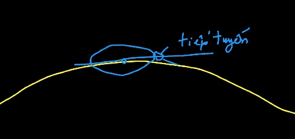

Follow Line
Học kỹ về context.rotate và context.translate
- Bọ rùa ở giữa tâm
- Đảo ngược bọ rùa ở giữa tâm
- Bọ rùa nằm trên đường tròn
- Bọ rùa bò đường tròn
- Bọ rùa quay theo chiều kim đồng hồ #1
- Bọ rùa quay theo chiều kim đồng hồ #2
- Bọ rùa quay theo chiều kim đồng hồ #3
- Hãy lập trình để bọ rùa bò theo hình vuông
- Bọ rùa bò theo đường cong Bezier Stack Overflow
